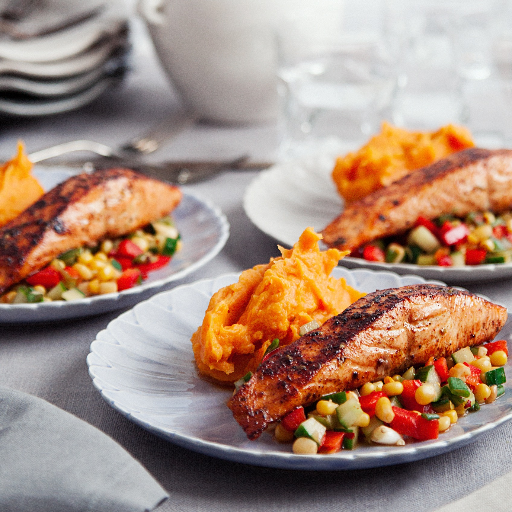

Cajungrillad lax med sötpotatismos och frisk salsa

En saftig och smakrik cajungrillad lax med sötpotatismos och frisk salsa, serverad med nykokt potatis och en krämig tomatsås. En klassisk vardagsrätt som är enkel att laga.
Förberedelse: 15 minuter | Tillagning: 20 minuter | Total tid: 35 minuter | Svårighetsgrad: Enkel | 4 portioner
Näringsvärde per portion: 530 kcal | Protein: 34 g
Ingredienser
- 600 g Laxfilé (i 4 portionsbitar)
- 1 msk Cajunkrydda
- 1 msk Rapsolja (till stekning/pensling)
- Flingsalt och svartpeppar
Sötpotatismos
- 800 g Sötpotatis
- 25 g Smör
- 0,5 dl Mjölk (valfritt, för lösare konsistens)
- Salt och peppar efter smak
Frisk salsa
- 1 st Mango (eller 250 g tinad fryst mango i tärningar)
- 1 st Röd chili (urkärnad och finhackad)
- 1 st Avokado (tärnad)
- 1 kruka Färsk koriander
- 1 st Lime (pressad saft)
- 1 msk Olivolja
- En nypa salt
Instruktioner
- Skala sötpotatisen och skär den i mindre bitar. Koka i lättsaltat vatten i ca 15–20 minuter tills den är helt mjuk.
- Gör salsan: Tärna mango och avokado. Finhacka chili och koriander. Blanda allt i en skål tillsammans med pressad limesaft, olivolja och en nypa salt. Ställ svalt.
- Häll av vattnet från sötpotatisen. Mosa potatisen tillsammans med smör (och ev. en skvätt mjölk) till ett jämnt, lent mos. Smaka av med salt och peppar.
- Krydda laxbitarna runt om med cajunkrydda, lite flingsalt och nymalen svartpeppar.
- Hetta upp en grill- eller stekpanna med lite olja och stek laxen på medelhög värme i ca 2–3 minuter per sida tills den är saftig och precis genomstekt.
- Servera den nystekta cajunlaxen på en bädd av sötpotatismos och toppa med den friska salsan.